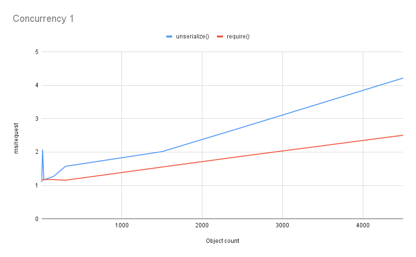

Serializing PHP
Larry Garfield
@Crell@phpc.social


- Staff Engineer for LegalZoom
- PHP-FIG Core Committee
- General purpose pedant
- Exploring PHP 8.0
- Thinking Functionally in PHP
What is serialization?
Cerealization
(Credit: https://flickr.com/photos/cottinghamphotography/6200250080/)
Story time

Requirements
- Mutate data on import
- Dynamic type maps
- Implode/explode arrays, sometimes
- Fast
Don't solve a problem, build a tool to solve the problem, then use it.
So, Symfony Serializer?
- Widely used
- Very flexible
- Couldn't collect/flatten
- Only static type maps ("class discriminators")
- Complex architecture, hard to modify
Sigh. Time to write one...
Plethora of Potential PHP Processes
__sleep/__wakeup(The before times)Serializable(PHP 5.1, Deprecated in 8.1)__serialize/__unserialize(PHP 7.4)var_export()/__set_state()JsonSerializable(__serialize()only, forjson_encode())- Roll your own...
__serialize/__unserialize (PHP 7.4)
class User {
protected int $id;
protected string $name;
protected DateTime $lastLogin;
// ...
public function __serialize(): array {
return ['id' => $this->id, 'name' => $this->name];
}
public function __unserialize(array $data): void {
$this->id = $data['id'];
$this->name = $data['name'];
$this->lastLogin = UserSystem::getLastLogin($this->id);
}
}
$s = serialize(new User());
print_r($s);
$u = unserialize($s);
// O:4:"User":2:{s:2:"id";i:42;s:4:"name";s:5:"Larry";}
var_export()/__set_state() (PHP 4.2)
class User {
protected int $id;
protected string $name;
protected DateTime $lastLogin;
public static function __set_state(array $data): self {
$new = new self();
$new->id = $data['id'];
$new->name = $data['name'];
$new->lastLogin = UserSystem::getLastLogin($this->id);
return $new;
}
}
$s = var_export(new User(), true);
file_put_contents('export.php', "<?php return $s;");
$u = require('export.php');
<?php return User::__set_state(array(
'id' => 5,
'name' => 'Crell',
'lastLogin' =>
DateTime::__set_state(array(
'date' => '2023-08-22 21:26:52.441708',
'timezone_type' => 3,
'timezone' => 'Europe/Amsterdam',
)),
))
Which is better?
Quick, to the benchmark mobile!
unserialize() vs __set_state()

__set_state() wins! ...By 1.25 ms over 4000 objects
Conclusions
__set_state() is faster than unserialize()
Exporting objects to code is almost never worth it. unserialize() is very fast.
But what about outside systems?
Separate Logic from Data
Separate logic from data
- If it's in your DI Container, thou shalt not serialize it
- If it references something in the container, thou shalt not serialize
- Value objects: +1
- Entities: Only in data mapper
- Just say No to Active Record
- Applies to all serialization formats
These are all good practices anyway.
Simple hydration
EnvMapper
The core logic (1)
class EnvMapper {
public function map(string $class, bool $require = false, ?array $source = null): object {
$source ??= $_ENV;
$rClass = new \ReflectionClass($class);
$rProperties = $rClass->getProperties();
$toSet = [];
foreach ($rProperties as $rProp) {
$propName = $rProp->getName();
$envName = $this->normalizeName($propName);
if (isset($source[$envName])) {
$toSet[$propName]
= $this->typeNormalize($source[$envName], $rProp);
} elseif (PropValue::None !== $default = $this->getDefaultValue($rProp)) {
$toSet[$propName] = $default;
} elseif ($require) {
throw MissingEnvValue::create($propName, $class);
}
}
// ...
}
}
The core logic (2)
class EnvMapper {
public function map(string $class, bool $require = false, ?array $source = null): object {
// ...
$populator = function (array $props) {
foreach ($props as $k => $v) {
try {
$this->$k = $v;
} catch (\TypeError $e) {
throw TypeMismatch::create($this::class, $k, $v);
}
}
};
$env = $rClass->newInstanceWithoutConstructor();
$populator->call($env, $toSet);
return $env;
}
}
What does this show?
- Deserialization is driven by class definition
- Type info & defaults driven by class definition
- Reflection is pretty fast, but not free
These will be important
Cool PHP trick #1
Visibility busting
$reader = (fn (string $prop) => $this->$prop ?? null)->bindTo($obj, $obj);
$value = $reader('privateProp');
$populator = function (array $props) {
foreach ($props as $k => $v) {
$this->$k = $v;
}
};
$env = $rClass->newInstanceWithoutConstructor();
$populator->call($obj, $toSet);
(Please don't do this)
Cool PHP trick #2
Enum as error code
enum PropValue {
case None;
}
// This specific case is mixed, but usually union types are better.
function getDefaultValue(\ReflectionProperty $subject): string|PropValue
{
$params = $this->getPropertiesForClass($subject->getDeclaringClass());
$param = $params[$subject->getName()] ?? null;
return $param?->isDefaultValueAvailable()
? $param->getDefaultValue()
: PropValue::None;
}
Roll your own
Stand on the shoulders of giants
Three libraries
Attributes overview
#[GreedyLoad(type: 'all')]
class Product
{
#[Positive, NonZero]
protected int $id;
#[Permission(perm: new Pemission('read'), type: Perms::Basic]
public function refillStock(int $quantity): bool
{
// ...
}
}
Limitations
- Reflection API is clumsy
- No access to the structure the attribute was on
- No inheritance
- No way to group related attributes
- No built-in default handling
- Attributes cannot be contextual
AttributeUtils addresses all of those
#[\Attribute(\Attribute::TARGET_CLASS)]
class Data implements FromReflectionClass, ParseProperties {
public readonly string $name;
public readonly array $properties;
public function fromReflection(\ReflectionClass $subject): void {
$this->name ??= $subject->getShortName();
}
public function propertyAttribute(): string { return MyProperty::class; }
public function includePropertiesByDefault(): bool { return true; }
public function setProperties(array $props): void { $this->properties = $props; }
}
#[\Attribute(\Attribute::TARGET_PROPERTY)]
class MyProperty
{
public function __construct(
public readonly string $column = '',
) {}
}
#[Data]
class Record {
#[MyProperty(column: 'beep')]
protected property $foo;
private property $bar;
}
$dataAttrib = $analyzer->analyze(Record::class, Data::class);
Inheritance is opt-in
#[\Attribute(\Attribute::TARGET_CLASS)]
class Person implements Inheritable
{
public function __construct(public string $name = '') {}
}
#[Person(name: 'Jorge')]
class A {}
class B extends A {}
$attrib = $analyzer->analyze(B::class, Person::class);
print $attrib->name . PHP_EOL; // prints Jorge
Analyzer does instanceof,
so child attributes work, too
#[\Attribute(\Attribute::TARGET_CLASS)]
class MainAttrib implements HasSubAttributes {
public readonly int $age;
public function __construct(public readonly string name = 'none') {}
public function subAttributes(): array {
return [Age::class => 'fromAge'];
}
public function fromAge(?Age $sub): void {
$this->age = $sub?->age ?? 0;
}
}
#[\Attribute(\Attribute::TARGET_CLASS)]
class Age {
public function __construct(public readonly int $age = 0) {}
}
#[MainAttrib(name: 'Larry'), Age(21)]
class A {}
class B {}
$attribA = $analyzer->analyze(A::class, MainAttrib::class);
print "$attribA->name, $attribA->age\n"; // prints "Larry, 21"
$attribB = $analyzer->analyze(B::class, MainAttrib::class);
print "$attribB->name, $attribB->age\n"; // prints "none, 0"
Almost all of Crell/Serde is driven by Attributes,
via AttributeUtils
Use it in your project today
What does Serde do?
Serde
use Crell\Serde\SerdeCommon;
$serde = new SerdeCommon();
$object = new SomeClass('a', 'b', new OtherClass());
$json = $serde->serialize($object, format: 'json');
$obj = $serde->deserialize($json, from: 'json', to: SomeClass::class);
- JSON, YAML, array, CSV, streaming JSON, streaming CSV
- Customize per-object-type
- Customize any type
- Support any additional formats
Basic usage
class Person
{
#[Field(serializedName: 'callme')]
public string $firstName = 'Larry';
#[Field(renameWith: Cases::CamelCase)]
public string $lastName = 'Garfield';
#[Field(renameWith: new Prefix('online_')]
public string $alias = 'Crell';
}
{
"callme": "Larry",
"LastName": "Garfield",
"online_alias": "Crell"
}
#[Field]controls behavior of a property- Can rename to a literal or via rules
Casesenum implements interface
Cool PHP trick #3
Enums as default objects
interface RenamingStrategy {
public function convert(string $name): string;
}
enum Cases implements RenamingStrategy {
case UPPERCASE;
case lowercase;
case snake_case;
case kebab_case;
case CamelCase;
case lowerCamelCase;
public function convert(string $name): string {
return match ($this) {
self::UPPERCASE => strtoupper($name),
self::lowercase => strtolower($name),
self::snake_case => // ...,
self::kebab_case => // ...,
self::CamelCase => // ...,
self::lowerCamelCase => // ...,
};
}
Default handling
class Person
{
#[Field(default: 'Hidden')]
public string $location;
#[Field[(useDefault: false)]
public int $age;
#[Field(requireValue: true)]
public string $job;
public function __construct(
public string $name = 'Anonymous',
) {}
}
location-> "Hidden"name-> "Anonymous"age-> uninitializedjob-> Exception
Sequences vs Dictionaries
class Order {
public string $orderId;
public int $userId;
#[Field(serializedName: 'items')]
#[SequenceField(arrayType: Product::class)]
public array $products;
#[DictionaryField(arrayType: Tag::class, keyType: KeyType::String)]
public array $tags;
}
{
"orderId": "abc123",
"userId": 5,
"items": [
{ "name": "Widget", "price": 9.99 },
{ "name": "Gadget", "price": 4.99 }
],
"tags": {
"userClass": {"name": "VIP"},
"discount": {"name": "Closeout"}
}
}
Implosion
class Order {
#[SequenceField(implodeOn: ',')]
protected array $productIds = [5, 6, 7];
#[DictionaryField(implodeOn: ',', joinOn: '=')]
protected array $dimensions = [
'height' => 40,
'width' => 20,
];
}
{
"productIds": "5,6,7",
"dimensions": "height=40,width=20"
}
Flatten/collect
class Results {
public function __construct(
#[Serde\Field(flatten: true)]
public Pagination $pagination,
#[Serde\SequenceField(arrayType: Product::class)]
public array $products,
) {}
}
class Pagination {
public function __construct(public int $total, public int $offset, public int $limit) {}
}
class Product {
public function __construct(public string $name, public float $price) {}
}
{
"total": 100,
"offset": 20,
"limit": 10,
"products": [
{ "name": "Widget", "price": 9.99 },
{ "name": "Gadget", "price": 4.99 }
]
}
Advanced flattening
class DetailedResults {
public function __construct(
#[Serde\Field(flatten: true)]
public NestedPagination $pagination,
#[Serde\Field(flatten: true)]
public ProductType $type,
#[Serde\SequenceField(arrayType: Product::class)]
public array $products,
#[Serde\Field(flatten: true)]
public array $other = [],
) {}
}
class NestedPagination {
public function __construct(
public int $total,
public int $limit,
#[Serde\Field(flatten: true)]
public PaginationState $state,
) {}
}
class PaginationState {
public function __construct(public int $offset) {}
}
class ProductType {
public function __construct(public string $name = '', public string $category = '') {}
}
Advanced flattening
{
"total": 100,
"limit": 10,
"offset": 20,
"products": [
{
"name": "Widget",
"price": 9.99
},
{
"name": "Gadget",
"price": 4.99
}
],
"foo": "beep",
"bar": "boop"
}
Type Maps
interface Product {}
interface Book extends Product {}
class PaperBook implements Book {
protected string $title;
protected int $pages;
}
class DigitalBook implements Book {
protected string $title;
protected int $bytes;
}
class Sale {
protected Book $book;
protected float $discountRate;
}
class Order {
protected string $orderId;
#[SequenceField(arrayType: Book::class)]
protected array $products;
}
Type Maps
class Sale {
#[ClassNameTypeMap(key: 'type')]
protected Book $book;
protected float $discountRate;
}
{
"book": {
"type": "Your\\App\\DigitalBook",
"title": "Thinking Functionally in PHP",
"bytes": 45000
},
"discountRate": 0.2
}
Type Maps
class Sale {
#[StaticTypeMap(key: 'type', map: [
'paper' => Book::class,
'ebook' => DigitalBook::class,
])]
protected Book $book;
protected float $discountRate;
}
#[StaticTypeMap(key: 'type', map: [
'paper' => Book::class,
'ebook' => DigitalBook::class,
])]
interface Book {}
{
"book": {
"type": "ebook",
"title": "Thinking Functionally in PHP",
"bytes": 45000
},
"discountRate": 0.2
}
Dynamic Type Maps
class ProductTypeMap implements TypeMap {
public function __construct(protected readonly Connection $db) {}
public function keyField(): string {
return 'type';
}
public function findClass(string $id): ?string {
return $this->db->someLookup($id);
}
public function findIdentifier(string $class): ?string {
return $this->db->someMappingLogic($class);
}
}
$typeMap = new ProductTypeMap($dbConnection);
$serde = new SerdeCommon(typeMaps: [
Your\App\Product::class => $typeMap,
]);
$json = $serde->serialize($aBook, to: 'json');
Streaming
- Can stream to JSON or CSV
\Traversableobjects treated as any other objectiterablewill get "run out" when serializing- Result: Lazy create and lazy stream at once!
Streaming
// The JsonStreamFormatter is not included by default.
$s = new SerdeCommon(formatters: [new JsonStreamFormatter()]);
// You may use any PHP supported stream here, including files,
// network sockets, stdout, an in-memory temp stream, etc.
$init = new FormatterStream(fopen('/tmp/output.json', 'wb'));
$result = $serde->serialize($data, format: 'json-stream', init: $init);
$fp = $result->stream;
// Now do with $fp as you wish.
Streaming
class ProductList {
public function __construct(
#[SequenceField(arrayType: Product::class)]
private iterable $products,
) {}
}
class Product { /* */ }
$db = ...;
$callback = function() use ($db) {
$result = $db->query("SELECT name, color, price FROM products ORDER BY name");
foreach ($result as $record) {
yield new Product(...$record);
}
};
// This is a lazy list of products, which will be pulled from the database.
$products = new ProductList($callback());
$s = new SerdeCommon(formatters: [new CsvStreamFormatter()]);
// Write to stdout, aka, back to the browser.
$init = new FormatterStream(fopen('php://output', 'wb'));
$result = $serde->serialize($products, format: 'csv-stream', init: $init);
Inside Serde
Architecture
- Stream-based (no IR)
- Can build IR per-format
- Almost entirely Attribute-driven
- Importers / Exporters
- Deformatters / Formatters
- Recursive all the way down
Setup
class SerdeCommon extends Serde {
protected readonly array $exporters;
protected readonly array $importers;
protected readonly array $formatters;
protected readonly array $deformatters;
protected readonly TypeMapper $typeMapper;
public function __construct(
protected readonly ClassAnalyzer $analyzer
= new MemoryCacheAnalyzer(new Analyzer()),
array $handlers = [],
array $formatters = [],
array $typeMaps = [],
) { ... }
}
- Everything is readonly
SerdeCommonis just setup; write your own!- Only non-exception class
extendsin the entire system - Default dependencies
Cool PHP trick #4
Default dependencies
class MyService
{
public function __construct(private Other $other = new Other()) {}
}
- Useful when dependency is mostly a util without its own dependencies
- Makes testing a lot easier
- Makes one-off uses easier
- For production, still DI to avoid duplication
- Default
NullLogger?
Per-run object
public function serialize(object $object, string $format,
mixed $init = null, array $scopes = []): mixed
{
$formatter = $this->formatters[$format]
?? throw UnsupportedFormat::create($format, Direction::Serialize);
$classDef = $this->analyzer->analyze($object, ClassSettings::class, $scopes);
$inner = new Serializer(
analyzer: $this->analyzer,
exporters: $this->exporters,
formatter: $formatter,
typeMapper: $this->typeMapper,
scopes: $scopes,
);
$rootField = $formatter->rootField($inner, $object::class);
$init ??= $formatter->serializeInitialize($classDef, $rootField);
$serializedValue = $inner->serialize($object, $init, $rootField);
return $formatter->serializeFinalize($serializedValue, $classDef);
}
Cool PHP trick #5
Internal execution objects
class ThingDoer {
public function __construct(private DepA $depA, private DepB $debB) {}
public function run(A $paramA, B $paramB) {
$runner = new Runner($this->depA, $this->depB, $paramA, $paramB);
return $runner->run();
}
}
class ThingRunner {
public function __construct(
public readonly DepA $depA, public readonly DepB $debB, private,
public readonly A $a, public readonly B $b) {}
public function run(): Result {
// Call a dozen internal methods that all use the constructor args.
}
}
- Avoid passing values in each method every time
- Fully immutable, so public properties OK!
- Safe to pass
$thisaround dependencies - No need to DI every separate piece separately!
Serialization overview
sequenceDiagram
participant Serde
participant Serializer
participant Exporter
participant Formatter
Serde->>Formatter: initialize()
Formatter-->>Serde: prepared value
Serde->>Serializer: Set up
Serde->>Serializer: serialize()
activate Serializer
loop For each property
Serializer->>Exporter: call depending on type
Exporter->>Formatter: type-specific write method
Formatter->>Serializer: serialize() sub-value
end
Serializer->>Formatter: finalize()
Serializer-->>Serde: final value
deactivate Serializer
Deserialization overview
sequenceDiagram
participant Serde
participant Deserializer
participant Importer
participant Deformatter
Serde->>Deformatter: initialize()
Deformatter-->>Serde: prepared source
Serde->>Deserializer: Set up
Serde->>Deserializer: deserialize()
activate Deserializer
loop For each property
Deserializer->>Importer: call depending on type
Importer->>Deformatter: type-specific read method
Deformatter->>Deserializer: deserialize() sub-value
end
Deserializer->>Deformatter: finalize()
Deserializer-->>Serde: final value
deactivate Deserializer
Full circle
TYPO3 decided they liked global arrays
Overview
# config/common/editorsettings.yaml
color: "#ccddee"
bgcolor: "#ffffff"
# config/dev/editorsettings.yaml
bgcolor: '#eeff00'
class EditorSettings {
public function __construct(
public readonly string $color,
public readonly string $bgcolor,
public readonly int $fontSize = 14,
) {}
}
$loader = new LayeredLoader([
new YamlFileSource('./config/common'),
new YamlFileSource('./config/' . APP_ENV),
]);
$editorConfig = $loader->load(EditorSettings::class);
Custom naming
use Crell\Config\Config;
#[Config(key: 'editor_settings')]
class EditorSettings {
public function __construct(
public readonly string $color,
public readonly string $bgcolor,
public readonly int $fontSize = 14,
) {}
}
Now looks for editor_settings.[yaml|json|php|ini]
Default is str_replace($class, '\', '_')
Use it
class EditorForm {
public function __construct(private EditorSettings $settings) {}
public function renderForm(): string {
// Do stuff here.
$this->settings->color;
// ...
}
}
Test it
class EditorFormTest extends TestCase {
public function test_something(): void {
$settings = new EditorSettings(color: '#fff', bgcolor: '#000');
$subject = new EditorForm($settings);
// Make various assertions.
}
}
Dependency Inject it
$container->register(EditorSettings::class, fn(Container $c)
=> $c->get(ConfigLoader::class)->load(EditorSettings::class);
Conclusions
var_dump()for code generating arrays onlyserialize()/unserialize()for internal use- Serde for anything external
- Only ever serialize value objects / clean entities
- Attributes are awesome
- PHP is the schema
- Holy crap modern PHP is nice!